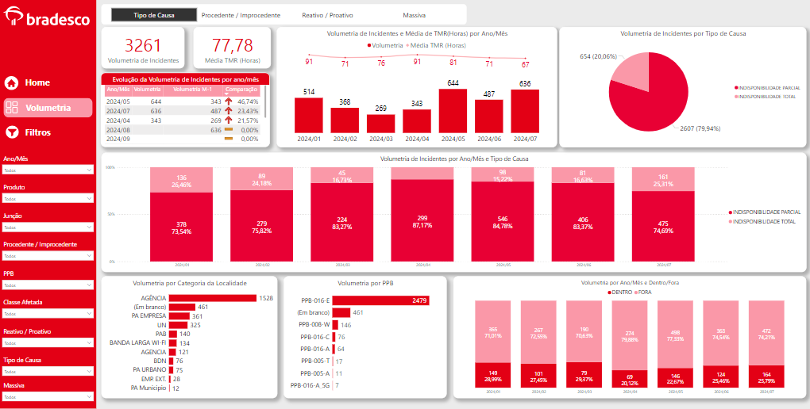
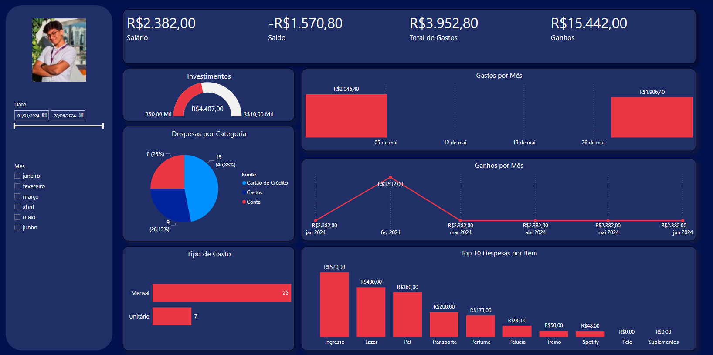
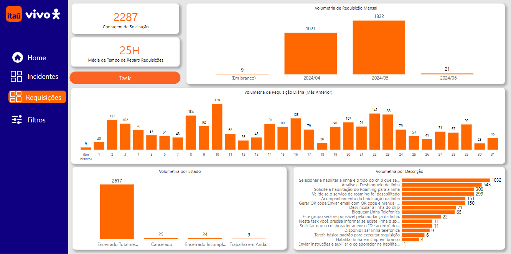
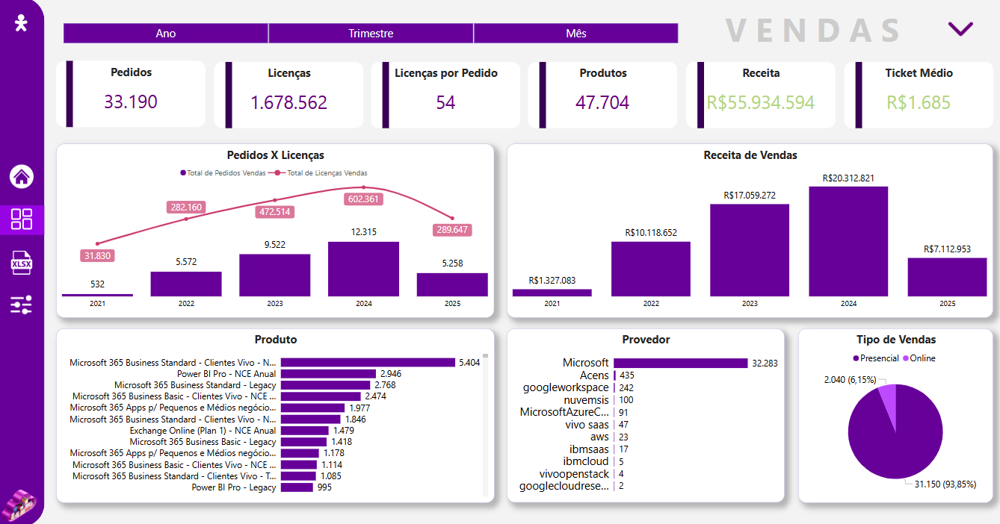
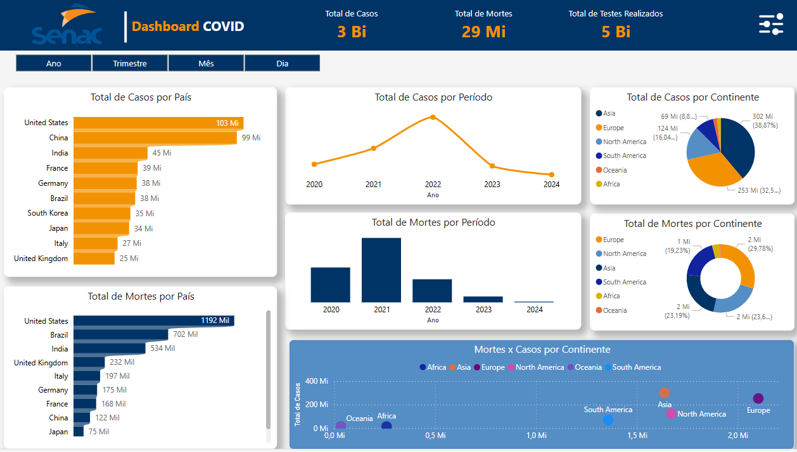
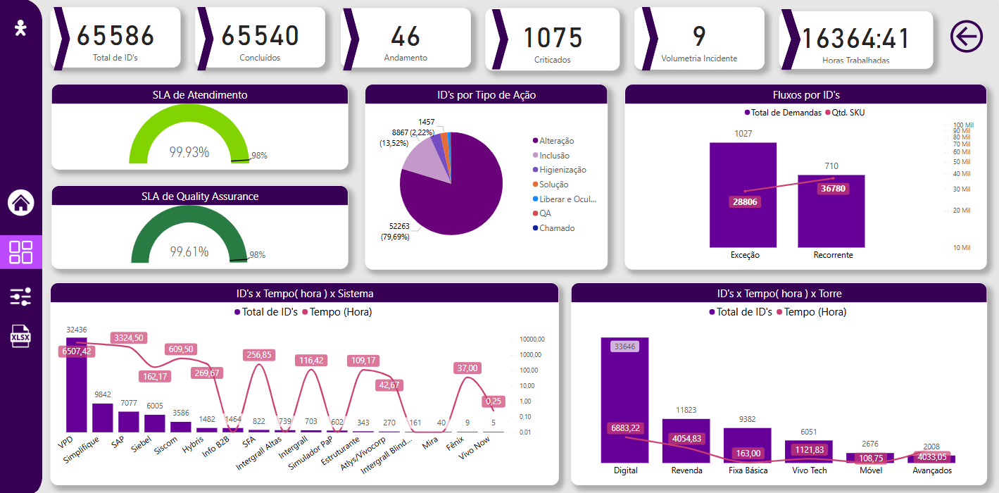
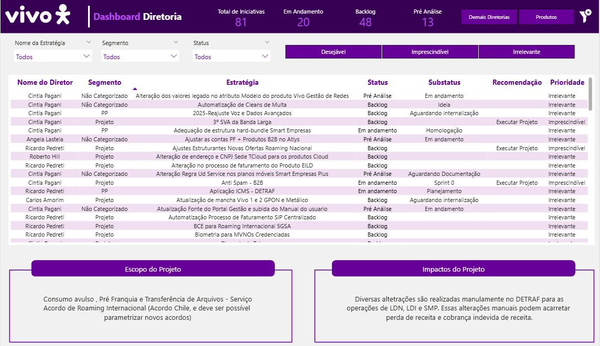

Profissional dedicado e apaixonado pela área de dados, com experiência no desenvolvimento de dashboards utilizando Power BI e em constante aprimoramento em Python. Busco oportunidades que me permitam crescer e contribuir significativamente na área de dados, com foco em Data Analytics, Machine Learning e Engenharia de Dados. Meu objetivo é aplicar minhas habilidades técnicas e analíticas para transformar dados em insights valiosos, impulsionando a tomada de decisões estratégicas e o sucesso organizacional.
Experiência
Vivo - Analista de BI Júnior
Outubro de 2024 - Atual
Responsável pela gestão e atualização dos relatórios e dashboards estratégicos de uma Gerência Sênior.
Desenvolvimento de dashboards personalizados e automatizados, voltados à análise de vendas e performance de projetos.
Automação de processos manuais utilizando Power BI, Power Query, DAX, Python e Excel, resultando em ganho de produtividade e redução de erros operacionais.
Atuação consultiva com foco em geração de insights e apoio à tomada de decisão gerencial.
Telefônica Infraestrutura e Segurança (TIS) - Assistente de Dados
Janeiro de 2023 - Outubro de 2024
Análise de qualidade em incidentes e requisições, promovendo melhorias no atendimento e nos processos.
Criação de dashboards analíticos no Power BI para monitoramento de KPIs operacionais.
Manipulação e análise de dados com SQL Server, com foco em extração de insights e suporte à tomada de decisão.
Elaboração de apresentações executivas e participação em reuniões estratégicas com stakeholders e clientes.
CERB CONSULTING - Estagiário de TI
Abril de 2022 - Janeiro de 2023
Organização e controle de acessos e perfis de usuários de TI, com gerenciamento de pastas físicas e digitais.
Utilização de planilhas Excel para controle de ativos e acessos.
Controle de estoque de equipamentos, incluindo embalagem e envio de materiais.
Apoio operacional na infraestrutura de TI, com foco em organização e processos.
Formação
SENAC - Centro Universitário SENAC
Análise e Desenvolvimento de Sistemas
Janeiro de 2023 - Junho de 2025
USJT - Universidade São Judas Tadeu
Engenharia da Computação
Janeiro de 2022 - Dezembro de 2022
Portfólio de Dashboards







Projetos
Dashboard Interativo de Indicações com Python e Streamlit
Desenvolvi uma aplicação web interativa utilizando Python, Streamlit e Plotly para visualização e análise de dados de sugestões e indicações coletadas via formulário. O sistema permite:
Visualização de gráficos dinâmicos com filtros cruzados (cross-filtering), onde o clique em um gráfico atualiza os demais automaticamente.
Tabela interativa com filtros por categoria e gênero, além de links clicáveis para cada indicação.
Interface responsiva e intuitiva, com navegação por abas (Página Inicial, Tabela, Gráficos e Formulário).
Deploy na nuvem via Streamlit Cloud, acessível publicamente para visualização e testes.
A aplicação é ideal para análise de dados qualitativos e quantitativos em ambientes corporativos, com foco em usabilidade e insights visuais.
Busco uma posição na área de dados, onde possa aplicar minhas habilidades em Power BI, SQL e desenvolvimento em Python para impulsionar a tomada de decisões estratégicas e otimizar processos de negócios. Meu objetivo é contribuir para o crescimento da empresa através da análise de dados avançada e soluções inovadoras, promovendo uma cultura orientada por dados.